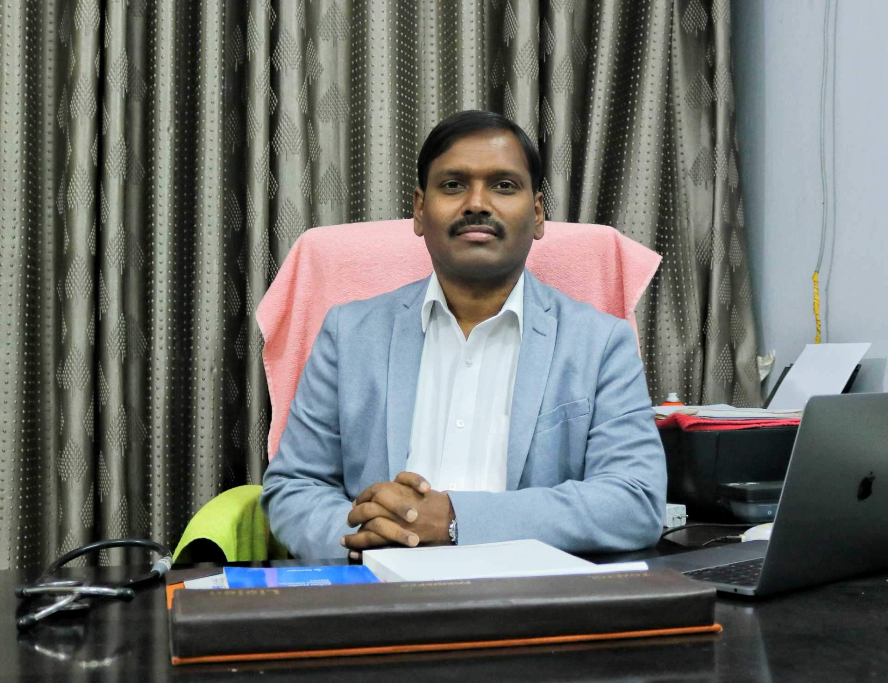
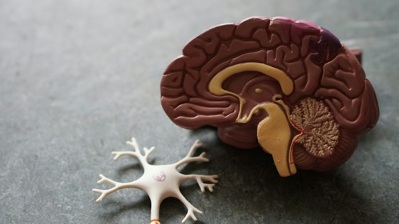

A calm, compassionate conversation with a psychiatrist in Patna
Dr. Sachchidanand Singh provides evidence-based, confidential mental health care at Shanti Neuropsychiatry Centre in Kankarbagh. Book online or request a consultation via WhatsApp.

Consultant PsychiatristDr. Sachchidanand Singh
MBBS (PMCH), MD Psychiatry (CIP Ranchi)
Ex-Assistant Professor, Patna Medical College • 15+ Years Clinical Experience
Specialized Mental Health Services
Every person's journey is unique. Treatment plans are tailored after a thorough assessment, integrating evidence-based pharmacotherapy, clinical counseling, and lifestyle adjustments.

Psychiatric Evaluation & Diagnosis
Comprehensive diagnostic clinical assessment for depression, persistent anxiety, OCD, panic disorder, bipolar affective disorder, and psychosis.
Counselling & Psychotherapy
Structured, confidential conversations helping individuals understand emotional stressors, cope with grief, manage relationship strain, and build resilience.
Cognitive Behaviour Therapy (CBT)
Evidence-based psychological therapy and formal psychometric assessments conducted by trained psychotherapists to modify disruptive thought and behavioural cycles.
De-Addiction & Rehabilitation
Medical detoxification and structured psychological support for alcohol, tobacco, cannabis, and prescription drug dependence with relapse-prevention protocols.
Child & Adolescent Mental Health
Empathetic evaluation for Attention-Deficit/Hyperactivity Disorder (ADHD), behavioural challenges, exam anxiety, school refusal, and mood difficulties in youth.
Video & Telemedicine Care
Secure telemedicine sessions for patients across Bihar and outside Patna who are unable to travel in person, conducted in compliance with national telemedicine guidelines.
Clinical Rigor
Consultations conducted with thorough diagnostic history, avoiding premature or unnecessary polypharmacy.
Punctual Schedules
Morning (9:00 am – 12:00 pm) & Evening (3:00 pm – 7:00 pm) slots managed to minimize clinic waiting times.
Strict Privacy
Medical records and consultations remain 100% confidential and compliant with medical ethics standards.
Prime Location
Opposite Savera Cancer Hospital, Rajni Path, PC Colony, Kankarbagh with convenient accessibility.
Meet Dr. Sachchidanand Singh
Reg. No. 37058 • Bihar Medical Council (2007)
Dr. Sachchidanand Singh is one of Patna's most respected consultant neuropsychiatrists, known for his patient, attentive listening and balanced medical approach. He completed his MBBS from Patna Medical College (PMCH) and his M.D. in Psychiatry from the prestigious Central Institute of Psychiatry (CIP), Ranchi.
He served as a Senior Resident at CIP Ranchi and PMCH Patna, and subsequently worked as an Assistant Professor of Psychiatry at Patna Medical College. In 2015, he founded Shanti Neuropsychiatry Centre in Kankarbagh with the mission of making modern, stigma-free mental health care accessible to all.
His clinical focus areas include major depression, generalized anxiety disorder, obsessive compulsive disorder (OCD), bipolar mood disorder, schizophrenia, insomnia, migraine and headaches, and addiction management. Medicines are prescribed judiciously, with careful attention to side effects, patient tolerance, and long-term wellbeing.
Verified Patient Feedback
Shanti Neuropsychiatry Centre maintains a 4.9 / 5 rating across Justdial and Practo, with over 1,600 patients sharing their experience with Dr. Singh and the clinic team.
"Dr. Singh is remarkably patient. He listened to my father's problems for over thirty minutes without rushing or interrupting. The medicines suited him very well and his sleep and mood improved within three weeks."✓ Verified Patient Review
"I had severe anxiety and panic attacks that made it difficult to go to work. Dr. Singh explained exactly why my heart was racing and gave both medicines and lifestyle advice. He does not over-prescribe. Very honest doctor."✓ Verified Patient Review
"One of the best mental health centres in Bihar. The clinic is quiet, clean, and respectful. Staff members are polite and help with appointment coordination. Highly recommended for depression and OCD care."✓ Verified Patient Review
What happens after you send a request
- You submit your request onlineProvide your name, phone number, and preferred date or session. No medical history is needed on the form.
- Our clinic desk coordinatesStaff contact you by phone or WhatsApp during clinic working hours to confirm an exact time slot.
- Your consultation visitYou meet Dr. Singh in a calm, private room. Please bring any past prescriptions, blood reports, or scans if available.
Request an appointment
Takes one minute. Your request is safely recorded in the clinic system and prepares an instant WhatsApp confirmation message.
Emergency Notice: If you or someone near you is in immediate danger or experiencing thoughts of self-harm, please visit the nearest hospital emergency room immediately. This form and WhatsApp are for outpatient appointments only.
Ready to send: WhatsApp Booking Confirmation
Your booking request details are generated below. Click Open WhatsApp to send this directly to Dr. Singh's clinic phone.
Frequently Asked Questions
Answers to common questions about visiting Dr. Sachchidanand Singh at Shanti Neuropsychiatry Centre.
Do I need a doctor's referral to book an appointment?
No referral is required. Patients and family members can directly request a visit using the online appointment form, via WhatsApp, or by calling the clinic during working hours.
What happens during the first consultation?
The first visit is an in-depth conversation focused on understanding what you or your loved one is experiencing. Dr. Singh listens to the history, symptoms, lifestyle factors, and previous treatments. A clear diagnosis and personalized treatment plan are explained openly.
Are mental health consultations confidential?
Yes, strict medical confidentiality is maintained. Your conversations, diagnosis, and treatment records are private and never shared without your explicit consent.
Can I consult online via video if I live outside Patna?
Yes, telemedicine video consultations are available for follow-up patients and individuals residing in remote locations who cannot travel to Kankarbagh, subject to national telemedicine regulatory guidelines.
What are the clinic days and timings?
Shanti Neuropsychiatry Centre operates Monday to Saturday in two sessions: Morning from 9:00 am to 12:00 pm, and Evening from 3:00 pm to 7:00 pm. The clinic is closed on Sundays.
Visit Shanti Neuropsychiatry Centre
Centrally located on Rajni Path in PC Colony, Kankarbagh (directly opposite Savera Cancer Hospital) with smooth road connectivity, ample parking, and full accessibility.
Dr. Sachchidanand Singh
Senior Consultant Neuropsychiatrist & De-Addiction Specialist
Shanti Neuropsychiatry CentreG-37, Rajni Path (In front of Savera Cancer Hospital)
PC Colony, Kankarbagh, Patna, Bihar 800020
Phone: +91 70704 74808, +91 99054 00460
Email: shantineuropsychiatry@gmail.com
Hours: Mon – Sat: 9:00 am – 12:00 pm, 3:00 pm – 7:00 pm (Sunday Closed)
Landmarks: Directly opposite Savera Cancer Hospital, adjacent to Doctor's Colony and PC Colony Park, Kankarbagh.